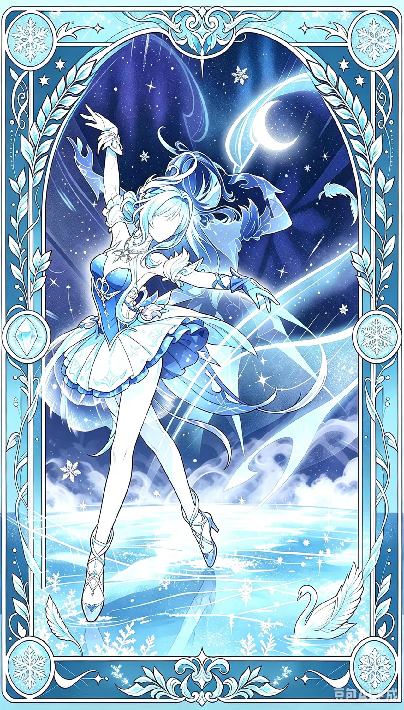
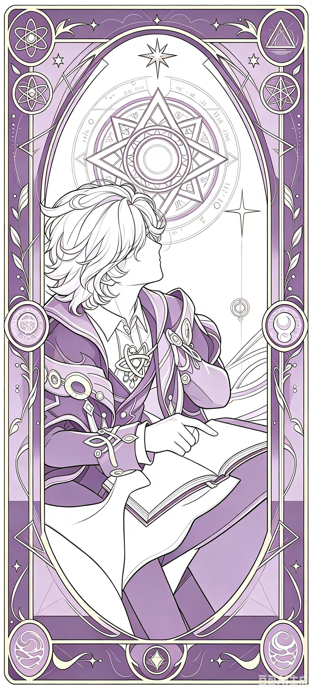
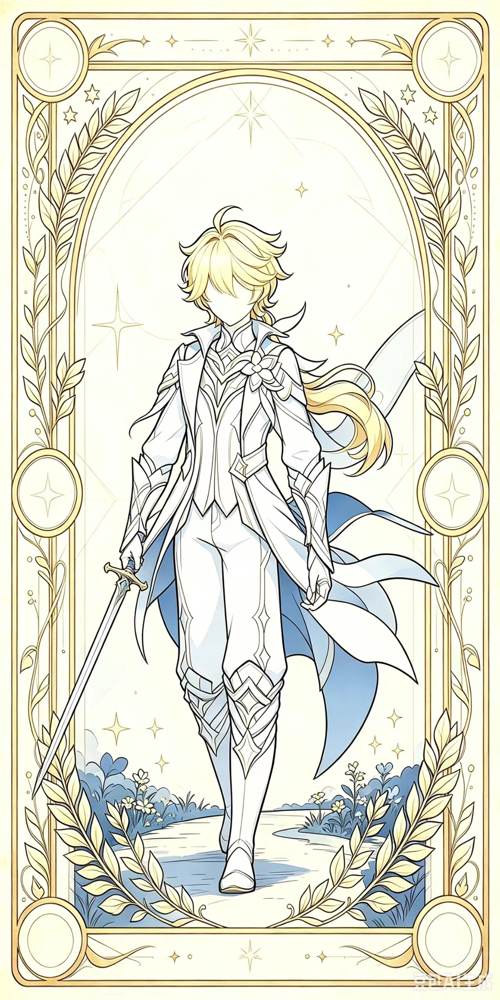
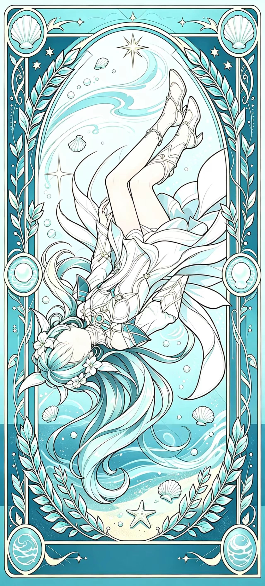
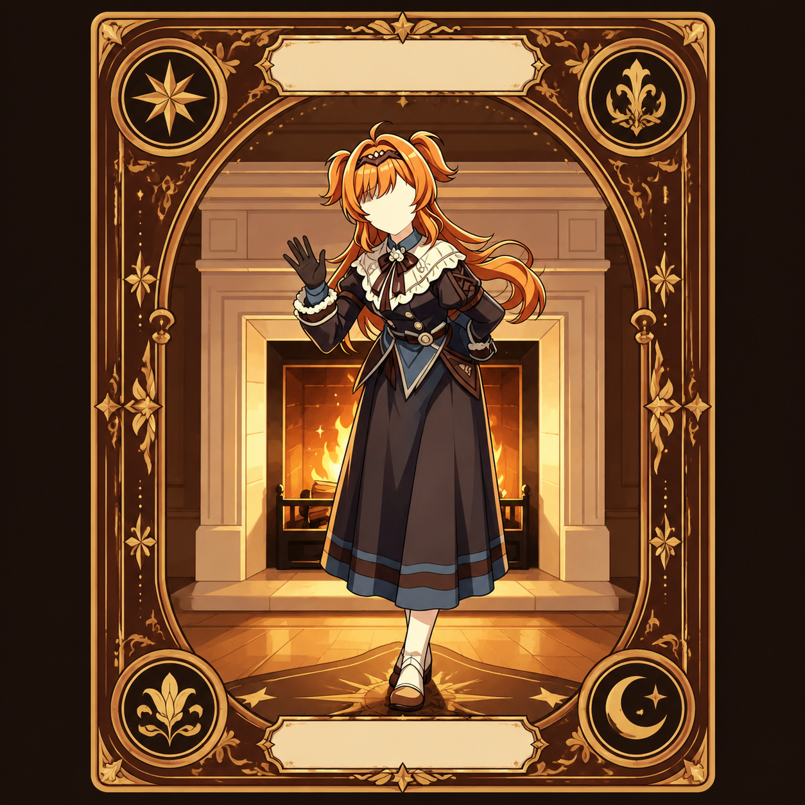

有人死去
死亡名单只留下名字——
没有死因，没有线索。
Korolevsky Theatre
— of Dead Souls —
死魂灵的夜曲
雪国，科洛列夫茨基剧院。散场铃响过之后，
百年难遇的超级暴风雪封锁了整座城市。
十三个人被迫留宿在剧院里——起初，所有人都以为
这只是一场新奇的体验。
直到有人发现：死亡，已经落座在观众席里。
大幕落下，雪也落了下来。电话线断了，道路埋了，剧院成了一座雪国孤岛。 十三个人围坐在烛光里，用讲故事的方式打发长夜—— 直到第一个名字，再也不会开口。
从这一刻起，剧场里不再有观众。 每个人既是演员，也是猎物。 白天，你们用选票放逐嫌疑者；夜晚，有什么东西在幕布之后游荡。
死亡名单只留下名字——
没有死因，没有线索。
一切复活与回归都被推迟，
命运按下不表。
「XX 回归游戏。」
只报名字，绝不解释。
于是，每一个归来者都笼罩在迷雾里—— 他是被救回的好人、被转化的亡魂，还是从未真正离开的死神？你无从分辨。

潜行于包厢之间的刺客。刀刃，替他发言。
每夜守护两扇门的沉默者——但他守不住自己。

每夜透视两个灵魂：它们之间，藏着亡者吗？

追猎死神的猎手。指认，即是审判。

三次挽留消逝的生命。命运，也有回声。
观众，亦是演员。手中的票根，就是投票。
×5
谢幕之后仍在游荡。每夜，取走一条性命。
×2被放逐，也会归来。除非——两名魂灵谢幕之后，刀锋正中于它。
演出表中另有一位「神秘加演」——由死神亲自挑选的亡者， 携一把无视守护的穿雾之刀归来。开演之前，无人知晓他是谁。
当幸存的人类人数不多于死亡阵营人数， 剧院的灯将熄灭——城之夜幕降临，死亡阵营获胜。
放逐独立计票 · 每夜至多两名死者 · 亡者无遗言